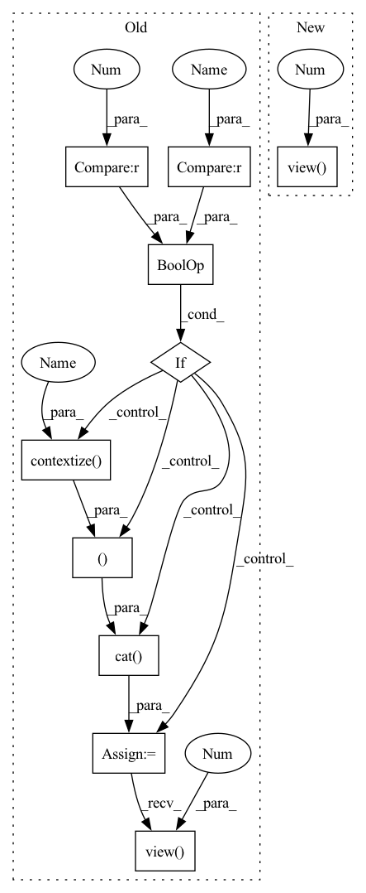

Pattern ID :13404
Before Change
B, N, C = x.shape
x = self.contextize(x, self.context) // (B, N, C*context)
if self.mix_base > 0 and x_base is not None :
x_base = self.contextize(x_base , self.mix_base) // (B, N, 4*mix_base)
x = torch.cat( (x_base, x ), dim=2)
x = x.view(B*N, -1) // (B*N, C*width)
y = self.net(x) // (B*N, n_out)
return y.view( B, N, -1 ) // (B, N, n_out)
class CNNUnpairedLayer(nn.Module):After Change
B, N, C = x.shape
x = x.view(B*N, -1) // (B*N, C*width)
x = self.net(x) // (B*N, n_out)
return x.view( B, N, -1 ) // (B, N, n_out)
class CNNPairedLayer(nn.Module):In pattern: SUPERPATTERN
Frequency: 4
Non-data size: 10
Instances Fragment ID: 45167299
Project Name: mxfold/mxfold2
Commit Name: 4a0f4cf87657a29c85260a0838e3e6d7666a653a
Time: 2019-12-02
Author: satoken@bio.keio.ac.jp
File Name: dnnfold/fold/layers.py
M Class Name: FCUnpairedLayer
N Class Name: FCUnpairedLayer
M Method Name: forward(2)
N Method Name: forward(3)
M Parent Class: nn.Module
N Parent Class: nn.Module
M File Name: dnnfold/fold/layers.py
N File Name: dnnfold/fold/layers.py
M Start Line: 335
M End Line: 345
N Start Line: 140
N End Line: 141
Before Change
B, N, C = x.shape
x = self.contextize(x, self.context) // (B, N, C*context)
if self.mix_base > 0 and x_base is not None :
x_base = self.contextize( x_base, self.mix_base) // (B, N, 4*mix_base)
x = torch.cat( (x_base, x ), dim=2)
x = x.view(B*N, -1) // (B*N, C*width)
y = self.net(x) // (B*N, n_out)
return y.view( B, N, -1 ) // (B, N, n_out)
class CNNUnpairedLayer(nn.Module):After Change
B, N, C = x.shape
x = x.view(B*N, -1) // (B*N, C*width)
x = self.net(x) // (B*N, n_out)
return x.view( B, N, -1 ) // (B, N, n_out)
class CNNPairedLayer(nn.Module): Fragment ID: 45167301
Project Name: keio-bioinformatics/mxfold2
Commit Name: 4a0f4cf87657a29c85260a0838e3e6d7666a653a
Time: 2019-12-02
Author: satoken@bio.keio.ac.jp
File Name: dnnfold/fold/layers.py
M Class Name: FCUnpairedLayer
N Class Name: FCUnpairedLayer
M Method Name: forward(2)
N Method Name: forward(3)
M Parent Class: nn.Module
N Parent Class: nn.Module
M File Name: dnnfold/fold/layers.py
N File Name: dnnfold/fold/layers.py
M Start Line: 335
M End Line: 345
N Start Line: 140
N End Line: 141
Before Change
def forward(self, x, x_base=None):
B, N, C = x.shape
if self.mix_base > 0 and x_base is not None :
x_base = self.contextize( x_base, self.mix_base) // (B, N, 4*mix_base)
x = torch.cat( (x_base, x ), dim=2) // (B, N, n_in=C+4*mix_base)
x = x.transpose(1, 2) // (B, n_in, N)
y = self.net(x)
return y.transpose(1, 2).view( B, N, -1 ) // (B, N, n_out)
class FCLengthLayer(nn.Module):After Change
B, N, _ = x.shape
x = x.permute(0, 2, 1)
x = self.conv(x)
x = x.permute(0, 2, 1).view( B, N, -1 )
return x // (B, N, n_out)
class FCUnpairedLayer(nn.Module): Fragment ID: 45167300
Project Name: mxfold/mxfold2
Commit Name: 97079ed64ffd5374169c120e85cd38ec4ed21553
Time: 2019-11-30
Author: satoken@bio.keio.ac.jp
File Name: dnnfold/fold/layers.py
M Class Name: CNNUnpairedLayer
N Class Name: CNNUnpairedLayer
M Method Name: forward(2)
N Method Name: forward(3)
M Parent Class: nn.Module
N Parent Class: nn.Module
M File Name: dnnfold/fold/layers.py
N File Name: dnnfold/fold/layers.py
M Start Line: 385
M End Line: 394
N Start Line: 137
N End Line: 140